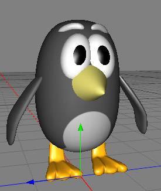

|
Symmetry ObjectIn nature almost every creature is symmetrical. They have two eyes, an equal number of legs, two arms, two wings and so on. With the help of the symmetry object you only have to model one side of the creature (assuming you're trying to model something real!). The second side will be automatically created through mirroring the geometry. See the image below for an example. Only one eye, wing, foot and so on was modelled. The counterpart was created through the symmetry object, saving considerable effort.  Usage Properties
|